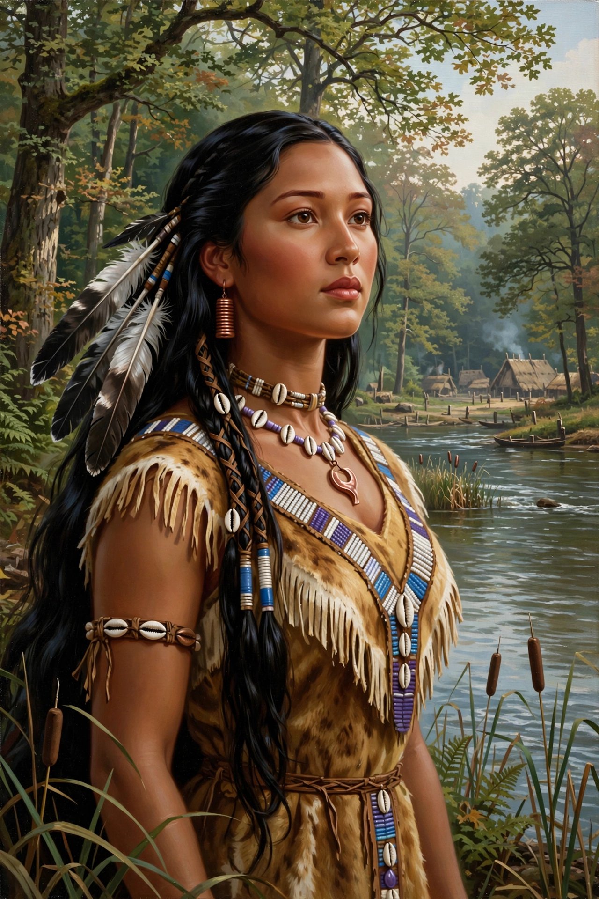

Pocahontas (c. 1596 – March 1617), born Amonute, known as Matoaka, was a Native American woman of the Powhatan Confederacy notable for her association with the Jamestown settlement in Virginia. She was the daughter of Powhatan, paramount chief of Tsenacommacah.
| Pocahontas | |
|---|---|
 | |
| Born | c. 1596, Tsenacommacah |
| Died | March 1617, Gravesend, England |
| Spouse | John Rolfe |
| Father | Powhatan |
According to John Smith, she saved him from execution in 1607 — an account historians debate. Captured by the English in 1613, she converted to Christianity as Rebecca, married tobacco planter John Rolfe in 1614, and travelled to London in 1616 where she was presented as a civilised “princess”. She died at Gravesend preparing to return.
Her story has been romanticised in art, literature and film, including Disney's 1995 animated film Pocahontas. Descendants through her son Thomas Rolfe include many Virginia families.